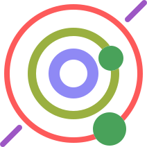

Effective Serverless, AWS Lambda and Node.js training
Serverless Lab has designed a training curriculum to get your organisation ready to work with serverless.
Serverless Lab covers topics needed to build enterprise ready applications taking advantage of the Serverless paradigm and the AWS cloud infrastructure.
Our curriculum includes learning Lambda Functions, API gateway, Dynamo DB, S3, RDS, Cloudwatch and covers from basic to advanced topics like networking, performance, security, troubleshooting and continuous delivery.

Why is it time to adopt serverless?
Serverless lets developers shift their focus from the server level to the task level, allowing organisations to move faster and with greater focus on delivering value to their customers rather than being stuck with infrastructure concerns.
If you are a startup or if you are building a new product, serverless will allow you to greatly shorten the time to production and to speed up the development-release-test loop allowing you to find your product-market fit faster.
If you want to migrate an existing product (or parts of it) to serverless, you will then benefit of greater agility and ability to integrate with other platforms or release new features quickly, which will increase your competitive advantage.
But that’s not all, there are several other important advantages that come with serverless:
- Auto-scalability: serverless is fully managed. Developers don’t need to implement code to scale and administrators don’t need to worry about updates or provisioning.
- High availability & Geolocation: since the infrastructure is fully managed you don’t have to worry about uptime at machinery level, it is guaranteed by the provider. Plus distributing your app over different geographic locations for reduced latency is just a click away.
- Efficiency & cost: Serverless has a ‘pay per use’ model: you pay for memory allocation and the time spent executing your code, so you don't incur the cost of unutilized functions as seen in cloud computing models where even ‘idle’ resources have to be paid for.
Curricula
All our training sessions are focused on learning through building real enterprise ready applications from scratch.
We currently offer two curricula, the Startup curriculum, suitable for getting your organisation started very quickly with serverless and the Advanced curriculum, focused on improving existing serverless skills and acquiring industry-proven best practices.
In this curriculum we will build from scratch an application to sell event tickets
Class duration: 8 hours (1 full day)
- What is Serverless and what is AWS Lambda
- Building a real-world serverless application on AWS
- Our first lambda on the AWS console
- Locale development and testing
- SAM template and Cloudformation deployment
- Manage sensible configuration values with Environment Variables
- Building an API to list events
- Introduction to Dynamo DB
- Store events in Dynamo DB
- Use data from Dynamo DB in our event listing API
- Introduction to S3 and CloudFront
- Build a single page serverless application
- Consume our serverless RESTful API from the serverless application
- Create a form to purchase event tickets
- Process the form input with a POST API Lambda Function
- Form validation and errors management
- Introduction to SNS and SQS
- Publishing a message on SQS when a purchase happens
- Creating a worker Lambda to send tickets to the users
- Logging, monitoring and debugging
- Tips and tricks for improved quality and productivity
- Recap & additional learning resources
Our Instructors
Our instructors have proven serverless experience in serverless building complex enterprise applications and delivering workshops and talks in some of the most famous conferences around the globe.

Why choose in-house training
Invest in training and save valuable hours of work
We believe that in house training will improve the performance of your team, making it more efficient and making your organisation save valuable working hours. Hours that you can invest in making your company even more successful.
Auto-magic Training ROI calculator™
Learn Serverless today